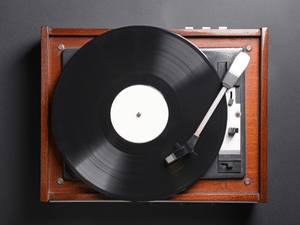

Music Recommendations
Genre Explanations
Rock- music that usually contains an electronic guitar, electric bass, drums and one or more singers and is written in a 4/4 time signature using a verse-chorus form.
Folk- traditional acoustic instrumentation with a simple melody and lyrics that tell a story.
Indie- any artist or band that independently records and publishes their music. The genre encourages experimentation and has influences from many different genres.
Pop- focuses on a general audience with an emphasis on recording, production, technology and creativity. The melodies and beats are often simple with limited harmonic accompaniment.
Most Popular Artists of 2022
1
Ed Sheeran
2
Billie Eilish
3
Ariana Grande
4
Taylor Swift
5
Adele
6
Lady Gaga
7
Justin Bieber
8
Shawn Mendes
9
Dua Lipa
10
Camila Cabello
Which of these artists are you a fan of?
Ed Sheeran
Billie Eilish
Ariana Grande
Taylor Swift
Adele
Lady Gaga
Justin Bieber
Shawn Mendes
Dua Lipa
Camila Cabello
What kind of music do you like?
Select one and I will make an artist recommendation!
Rock
Folk
Indie
Pop

Who is your favorite artist?
My favorite band is Rainbow Kitten Surprise.
Did you find this page helpful?
Other Recommended Websites
Link One
Link Two
Click here to return to the top of the page